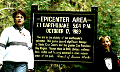

1997-07-04
The 1989 Earthquake
The 1989 Loma Prieta earthquake hit northern California on Tuesday, October 17, at 5:04 PM. My family and I were very lucky, and were affected only slightly. This is what it was like for us.

October 17 was hot and still. We'd had no rain for months. On that day, I left work a little early to referee a soccer game. I had changed into my black shorts in the locker room at my Tandem office, and arrived at the field a few minutes early. This was a practice game for boys aged about 12, between two  AYSO teams that were well coached and supported by the parents.
AYSO teams that were well coached and supported by the parents.
The game was played on a field behind a Sunnyvale elementary school, about two miles from my house. The school was in a neighborhood of one-story tract houses on small lots, perhaps eight or ten to an acre. Sunnyvale is on flat ground, not much above the level of San Francisco Bay, and within sight of low mountains which ring the bay and the Santa Clara valley. The San Andreas Fault runs through the mountains just west of town.
The parents of both teams chose to sit on the same side of the field, in the shade of a row of pines on the edge of the school property. People were settling down on their lawn chairs and blankets. Younger children were playing tag among the trees. The first game of the baseball World Series was just beginning, and several of the soccer parents were listening to the game on transistor radios as I went through the pre-game ritual, selecting parents as club linesmen, and prepared for the coin toss. I remember I was standing in the middle of the field when the ground began to roll.
This was probably the safest place in the world to be in an earthquake, in the middle of an open field, and so I wasn't concerned for my own safety much. The sensation was like being on a boat fighting its way through crazy waves going in several directions. I had time to look over at the pines and the people under them, and see that the trees were whipping back and forth but didn't look like they were going to fall. The shaking continued for 15 seconds. It seemed like a long time. People swayed back and forth but nobody fell down. I heard power transformers on utility poles make that booming noise they make when there's a short.
My wife Lilli was refereeing another soccer game at the same hour, on a different field, and saw the water from swimming pools splashing high above the six-foot board fences that separated people's yards from her soccer field.
When the shaking stopped, everybody paused, mentally checked themselves out, and then asked me what to do. Well, how did I know? It was clear that this was a big earthquake, we could hear sirens in the distance, and also clear that we were all safe. So I said, "We came here to play soccer. Let's play soccer." And we started the game.
Playing soccer gave the kids time to realize that they were OK, that life would go on, and it gave them something to do that they could do well. My tactic would have worked better, except for the parents who had their radios on. When we stopped at the half, they had stories about the Bay Bridge falling into the Bay, freeways collapsing, and so on. I began to realize that the real world was not so idyllic and simple as a game of soccer, and as the game ended it occurred to me that I had to pass under a freeway to get home, and I wondered if the bridge was still up.
When I drove home, there seemed to be very little damage. Power was out, and people were driving cautiously. The car radio was full of news bulletins. The freeway bridge was still standing and looked just the same as ever. When I got home, the electric door on the garage wouldn't open, but when I went inside, my wife and sons were there. Lilli had called off her game and sent people home, and walked the few blocks back home. The phone still had a dial tone, but we didn't use it, in order to keep the lines clear for emergencies.
My sons had been home when the quake hit, and like good California kids, had gone outside. They reported that the house shook and creaked, and that the pictures flapped against the walls. One glass had tipped over in the quake and broken; that was the extent of our damage.
Power was restored a few hours later, and that evening we watched TV programs describing the extent of the disaster, the fires, the collapsed buildings and freeways, the heavy damage to Santa Cruz and Los Gatos, and the deaths and injuries. There was very little damage in Sunnyvale or in the towns near it: The 280 freeway near our house had a big crack across it and was closed for a few days, and schools and work were closed the next day.
When I returned to work, I found that several ceiling tiles had fallen down from the suspended ceiling. All the computers in the building stayed on the desks. There were no disk head crashes. Power went out, and so the desktop machines went down, but the fault tolerant minicomputers kept running on battery. Getting everything back to work didn't take long.
We were very lucky to be spared the damage other parts of the San Francisco area suffered, and we appreciated our good fortune. We contributed to the quake relief funds set up at work.
Long term results: I don't empty my pockets at night; I leave everything in my pants. I noticed some people were a little shy of parking under bridges. One friend announced that she'd had it and was moving to Sacramento. She didn't though. I signed up for the local emergency preparedness group, took a search & rescue class, participated in a drill. Some of the freeways that fell were never repaired; downtown Santa Cruz still has some big empty gaps. And everybody who lives in the Bay Area has a tiny part of their awareness watching for the next one and hoping it's not a lot worse.
07/04/97